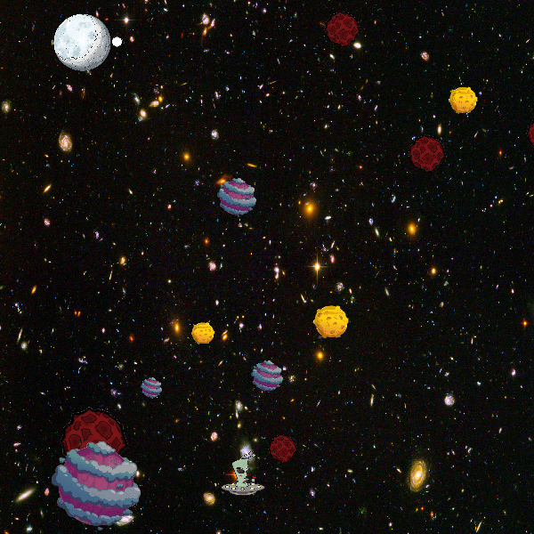
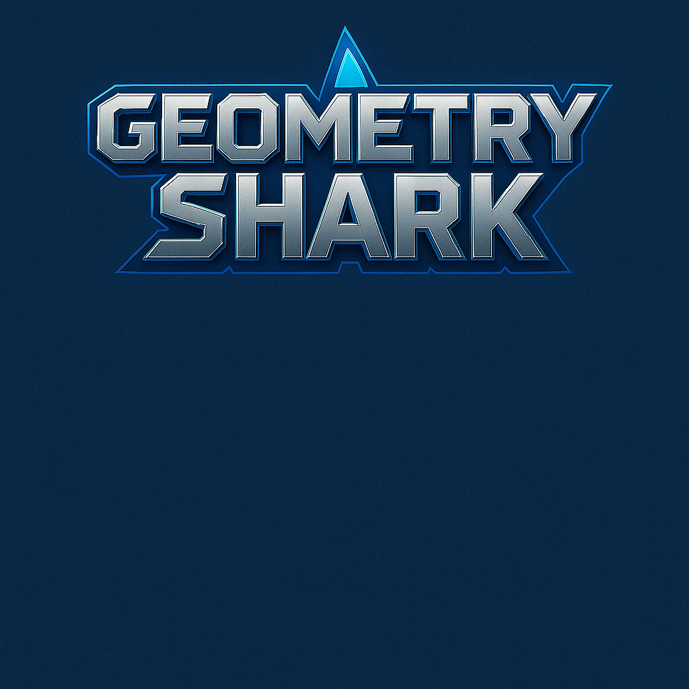
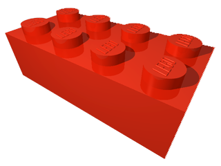

JOUABLE DANS LE NAVIGATEUR ↗Jeu spatial01
Guide l’alien jusqu’à la Lune. Maintiens le clic pour orienter sa trajectoire et évite les rochers.
DE LA LICENCE AU NAVIGATEUR
Des jeux et des applications réalisés pendant ma Licence Informatique.
Explore mes projets, consulte leur code et essaie les versions disponibles.

JOUABLE DANS LE NAVIGATEUR ↗Guide l’alien jusqu’à la Lune. Maintiens le clic pour orienter sa trajectoire et évite les rochers.

JOUABLE DANS LE NAVIGATEUR ↗Saute, traverse les portails et change de gravité. Trois parcours à terminer avec le bon timing.
Construis une usine : mines, tapis, transformations et livraison de formes. Retrouve le moteur et les sprites du projet.

APPLICATION PYTHON · SESSION LOCALE ↗Crée une grille, choisis tes briques et pose-les sur le plateau. Explore aussi les joueurs et les statistiques du projet.
Compose tes équipes, choisis les règles et joue à deux sur le même appareil. Aligne tes personnages et utilise leurs pouvoirs.
Je suis Mohamed Boubaker, étudiant en Licence Informatique à l’Université Claude Bernard Lyon 1. Ces projets explorent la programmation, les interfaces graphiques et les bases de données.
Les jeux C++ sont compilés en WebAssembly. ShapeCraft conserve son moteur Java et son interface Swing. Les applications Python exécutent leurs contrôleurs et leurs templates avec une base locale adaptée au navigateur. Les dépôts détaillent les versions universitaires et leur contexte.
Explorer mon GitHub ↗